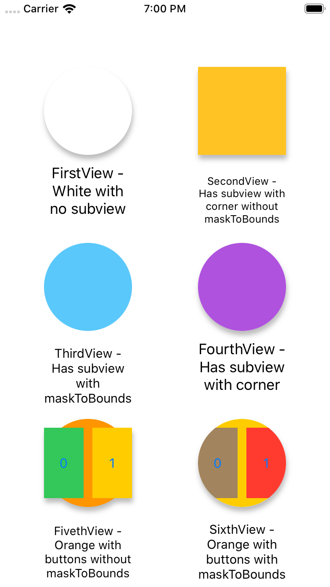

问题
设计图中View有阴影和圆角，里面填充了四个按钮。同时设置View的圆角和阴影，阴影并不显示。试了很多次，找了很多办法，记录一下过程。
为了展示父视图的圆角，设置了masksToBounds=YES，将超出父视图的内容clip掉，这样圆角就OK了。不设置时，Subview会超出父视图，看起来像圆角没有设置成功。
接着给父视图设置Shadow却没有成功。一开始以为是代码的问题，写了很多次，数值啊颜色啊大小啊都设置的很大，却还是不显示。百度了一下，提示阴影为超出父视图的部分，如果使用masksToBounds会把超出部分切掉，但去掉masksToBounds会导致圆角失效。
解决方案
给View外面套一层ShadowView，把阴影加到ShadowView上，不设置masksToBounds，再设置真正需要圆角的View，设置masksToBounds即可。
1 | self.shadowView.layer.cornerRadius = 50; |
设置没有SubView的View时并不需要设置masksToBounds属性就可以同时拥有圆角和阴影，但有SubView时为了不让它超出父视图内容（如果都为白色的话超出看着特别像设置没有成功的样子）就必须设置masksToBounds属性了，才会有上面的问题。
Demo
写了一个Demo，展示一下不同的设置效果，给大家参考。
https://github.com/Yadea-Web/RadiusShadowDemo
- 第一个View是没有Subview的情况，直接设置cornerRadius即可，不需要设置masksToBounds属性。
- 第二个View有一个子View，不设置masksToBounds属性显示阴影但圆角没生效，因为子视图超出了。
- 第三个View有一个子View，设置masksToBounds属性圆角生效了，但阴影消失了，因为把超出部分截掉了。
- 第四个View有一个子View，设置View的阴影，不设置masksToBounds。设置Subview的cornerRadius，再设置masksToBounds属性。Subview将超出部分截掉，外层展示它应该展示的阴影效果。
- 第五第六展示的是有多个子控件的情况，与三四类似，详见Demo。
